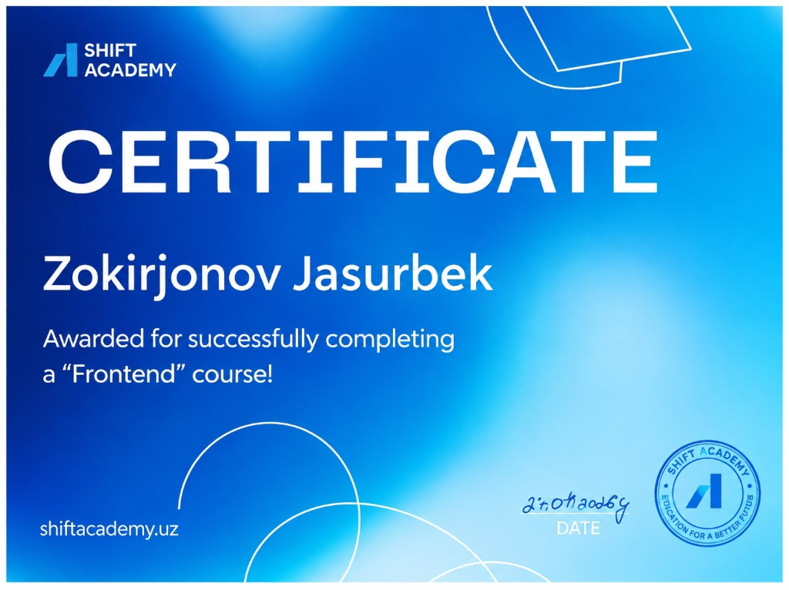

Kelajak Texnologiyalarini
Bugun Maktabimizga
Birgalikda Olib Kiramiz!
Assalomu alaykum! Men Jasurbek Zokirjonov — Frontend dasturchi, 10 ta faol Vercel loyihasi yaratuvchisi va Shift Academy professional bitiruvchisiman. Mening maqsadim — shunchaki yetakchi bo'lish emas, balki maktabimizdagi har bir tengdoshimga zamonaviy dasturlashni bepul o'rgatish, iqtidorli jamoa tuzish va maktabimizni respublika miqyosida birinchi o'ringa olib chiqishdir!
Jasurbek Zokirjonov
Frontend Muhandis & Maktab IT Yetakchisi
Maktab IT Yetakchisi Sifatidagi Saylov Dasturim
Men maktabimizda IT sohasini shunchaki nomiga emas, har bir sinf xonasida, har bir qiziquvchi o'quvchi hayotida aniq natijalar bilan rivojlantirish uchun quyidagi 5 ta asosiy yo'nalishni amalga oshiraman:
"IT Start" — O'quvchilar Uchun Bepul Dasturlash To'garagi
Noldan boshlab har bir xohlovchi o'quvchiga zamonaviy dasturlash asoslarini o'rgatish
Har haftada 2 marta maktab kompyuter xonasida yoki interaktiv formatda o'quvchilarga o'z shaxsiy saytlarini yaratishni amaliy o'rgataman.
Quruq nazariya o'rniga har bir darsda kichik o'yin, kalkulyator, viktorina yoki portfolio sayt yaratiladi. O'quvchi birinchi oydanoq o'z mahsulotiga ega bo'ladi.
Dars o'tolmay qolganlar yoki takrorlamoqchi bo'lganlar uchun barcha qo'llanmalar, kod namunalari va video instruksiyalar maxsus Telegram kanalimizda jamlanadi.
Maqsad — kamida 50 nafar maktabdoshimizga kompyuterdan shunchaki o'yin o'ynash emas, uni boshqarish va dastur yaratish ko'nikmasini singdirish.
Men Yaratgan 10 ta Real Vercel Loyihalari
Mening nomzodligimning boshqalardan eng katta farqi — men shunchaki va'da bermayman, balki allaqachon internetda faol ishlab turgan 10 ta yirik veb-platforma va 3D loyihalarni mustaqil ishlab chiqqanman!
7-buyuk-shaxs
Buxoro 7 Piri 3D Ziyorat Portali. Buyuk allomalarimiz va tasavvuf pirlari haqidagi ma'lumotlar, 3D interaktiv xaritalar va madaniy merosni zamonaviy texnologiyalarda namoyish etuvchi veb-platforma.
kurs-platform
Zamonaviy Kurslar va Ta'lim Portali. O'quvchilar uchun turli sohalardagi kurslar katalogi, chuqur SEO optimizatsiyasi (OpenGraph, meta teglar) va interaktiv foydalanuvchi interfeysi.
quiz (8-sinf)
Premium 3D Quiz for Ravshan dostoni. Maktab adabiyot darsligi asosida yaratilgan interaktiv 3D doston viktorinasi. O'quvchilarga o'zbek xalq dostonlarini o'yin orqali yodlash imkonini beradi.
new-uzbekistan
O'zbekiston Yo'li (1924-2026) 3D Animatsion Portal. Vatanimizning 1 asrlik boy tarixi, mustaqillik yutuqlari va kelajak istiqbollarini 3D animatsiyalar bilan aks ettiruvchi vatanparvarlik loyihasi.
med-eliteuz
Med-Lite - Shifoxona va Tibbiy Xizmatlar. Fuqarolar uchun shifoxonalar ma'lumotnomasi, shifokorlar qabuliga yozilish kartochkalari va sog'lom hayot bo'yicha maslahatlar markazi.
mentor.uz
Ustoz va Shogird Ilmiy Hamjamiyati. Tajribali ustozlar va o'rganuvchilarni birlashtiruvchi, yo'nalishlar bo'yicha maslahat olish imkonini beruvchi ijtimoiy ta'lim portali.
photoeditor
Brauzerda Foto Tahrirlash Studiyasi. Rasmlarni qirqish, filtrlarni qo'llash, yorug'lik va kontrastni to'g'irlash hamda eksport qilish imkonini beruvchi yengil va tezkor grafik vosita.
rent-car
Avtomobillar Ijarasi va Bron Qilish Xizmati. Mashinalar katalogi, narxlarni hisoblash, qulay filtrlar va buyurtma berish formasiga ega tijoriy veb-platforma.
rezumi-builder
Professional Rezyume Yaratuvchi Dastur. Maktab bitiruvchilari va talabalarga xalqaro standartdagi chiroyli CV tuzish va uni PDF qilib yuklab olish imkoniyatini taqdim etuvchi foydali veb-ilova.
habitify
Odatlar Nazorati va Kun Tartibi Dasturi. O'quvchilarda intizom, kitob o'qish, sport va kod yozish kabi foydali kundalik odatlarni shakllantirishga mo'ljallangan motivatsion ilova.

Shift Academy: Frontend Dasturchilik Sertifikati
Maktab IT yetakchisi faqat havas qiluvchi emas, professional ta'lim olgan va tasdiqlangan hujjatga ega bo'lishi kerak. Men nufuzli Shift Academy zamonaviy dasturlash akademiyasining Frontend yo'nalishini a'lo baholarga bitirdim.

Maktab IT Yetakchisining 4 Oylik Amaliy Yo'l Xaritasi
Men aniq va vaqt bilan belgilangan reja bilan ishlayman. Faoliyatim boshlangan ilk kundan boshlab har oyda maktabimizda sezilarli natijalarga erishamiz:
Tashkiliy Bosqich & IT Club
- ✓ Maktab IT Kengashini tuzish va sinflardan IT elchilarini tanlab olish.
- ✓ "IT Start" to'garagining ilk bepul ochiq darsini o'tkazish.
- ✓ Maktab Telegram o'quv kanali va savol-javob guruhini ishga tushirish.
Amaliyot & Ilk Saytlar
- ✓ Har bir o'quvchi o'zining birinchi shaxsiy veb-sahifasini yasaydi.
- ✓ "Bir Million O'zbek Dasturchisi" dasturiga 100% o'quvchilarni yo'naltirish.
- ✓ Maktab ichki 1-kichik Mini-Hakatonini o'tkazish.
Smart School & Platformalar
- ✓ Maktab yangiliklari va reytingi portali sinov rejimida ishga tushadi.
- ✓ Kutubxona QR-kodli darsliklar loyihasini maktabga tatbiq etish.
- ✓ Ustozlar va o'quvchilar uchun "Kiberxavfsizlik va AI" seminar-treningi.
Olimpiada & G'alaba
- ✓ Maktab IT Terma Jamoasini tuman va viloyat olimpiadalariga olib chiqish.
- ✓ IT Park va startap tanlovlariga eng yaxshi 3 ta maktab loyihasini topshirish.
- ✓ Yillik hisobot va eng faol o'quvchilarni tantanali taqdirlash.
Nega Aynan Jasurbek Zokirjonov Yetakchi Bo'lishi Kerak?
Quruq shiorlar o'z yo'liga, ammo yetakchilik — bu intizom, amaliy bilim va do'stlariga sabr bilan yo'l ko'rsata olish salohiyatidir. Keling, solishtirib ko'raylik:
Oddiy Yondashuvlar
Boshqa nomzodlarning kamchiliklari
"Biz maktabda IT ni rivojlantiramiz" degan so'zlar bor, ammo birorta ham tayyor sayt yoki loyiha yo'q.
Professional kurslarda tizimli o'qimagan, faqat YouTube orqali yuzaki tushunchaga ega.
O'z bilimini boshqalarga tushuntirish va jamoa bilan ishlash ko'nikmasi yetishmaydi.
Hozirgi davr talab qilayotgan 3D Web, zamonaviy React va AI vositalarini amalda qo'llay olmaydi.
Jasurbek Zokirjonov
Aniq dalillar, intizom va amaliy natija
Buxoro 7 Piri 3D, Ravshan dostoni 3D Quiz, Ta'lim platformasi, Habitify va boshqa 10 ta to'liq ishlab turgan vebsaytlar.
Nufuzli akademiyaning rasmiy tasdiqlangan va muhrlangan Frontend diplomiga ega bo'lgan ishonchli bilim.
Bilimini qizg'anmaydi — har bir qiziquvchi maktabdoshini noldan kuchli darajaga olib chiqishni o'z burchi deb biladi.
Three.js, WebGL, Tailwind va Sun'iy Intellekt integratsiyasini chuqur amaliy biladigan yangi avlod yetakchisi.
Jasurbekning Interaktiv Terminali
Terminal orqali buyruqlarni kiritib ko'ring:
help,
skills,
projects,
matrix,
quote,
partners
Maktab IT Ekosistemasi & Strategik Hamkorlar
Bizning maktabdagi IT faoliyatimiz havaskorlik emas, balki nufuzli akademiyalar, zamonaviy bulutli platformalar va xalqaro texnologiyalar ekotizimiga tayanadi:
Shift Academy
shiftacademy.uz
Professional dasturlash akademiyasi. Jasurbek ushbu akademiyaning "Frontend Web Development" yo'nalishini rasmiy sertifikat bilan muvaffaqiyatli bitirgan.
IT Park Uzbekistan
it-park.uz
Yoshlar startaplari va IT inkubatsiya markazi. Maktab jamoasini viloyat va Respublika hakatonlariga olib chiqishdagi asosiy maydoncha.
Vercel Cloud
vercel.com
Global tezkor frontend server tarmog'i. Jasurbekning barcha 10 ta real loyihalari Vercel global bulutli infratuzilmasida 24/7 uzluksiz ishlamoqda.
One Million Coders
uzbekcoders.uz
Respublika miqyosidagi yoshlar dasturlash platformasi. Maktab o'quvchilarini davlat sertifikatlariga ega bo'lishlariga ko'maklashish dasturi.
Maktabimizning Barcha Sinf va Tadbirlari Uchun Zamonaviy Veb-Yechimlar!
Sinfingiz uchun shaxsiy veb-sahifa, fanlar bo'yicha interaktiv 3D viktorinalar yoki maktab tadbirlari uchun raqamli ro'yxatdan o'tish platformasi kerakmi? Men o'z bilim va tajribam bilan har bir sinfga yuqori darajadagi zamonaviy saytlar yaratishda beminnat yordam berishga tayyorman!
Jasurbekning Kod Yozish Taqvimi (GitHub Activity)
type-0713 hisobidagi real commitlar va doimiy amaliyot grafigi
"IT Start" Bepul Maktab To'garagi Rejasi
Har bir maktabdoshimiz uchun noldan boshlanadigan amaliy mashg'ulotlar grafigi:
Veb Asoslari (HTML5)
Saytning mustahkam skeletini qurish, semantik teglar, matn, rasmlar va formalar bilan ishlash asoslari.
Vizual Bezak (CSS & Tailwind)
Ranglar, shriftlar, Flexbox, CSS Grid, zamonaviy animatsiyalar va mobil moslashuv (responsive UI).
Dasturlash Mantiqi (JavaScript)
O'zgaruvchilar, funksiyalar, tugmalar bosilishi, interaktiv mantiq va 3D Canvas elementlarini ulash.
Hakaton & IT Olimpiada
Maktab terma jamoasi bilan Respublika IT tanlovlariga tayyorgarlik, jamoaviy startaplar va loyihalar himoyasi.
Ko'p Beriladigan Savollarga Aniq Javoblar
Maktab IT yetakchisi faoliyati va to'garak haqidagi muhim ma'lumotlar:
1. "IT Start" to'garagida qatnashish chindan ham mutlaqo bepulmi? ▼
2. Dasturlashni o'rganish uchun o'zimning shaxsiy kompyuterim bo'lishi shartmi? ▼
3. Qaysi sinf o'quvchilari to'garakka a'zo bo'la oladi? ▼
4. Maktab IT olimpiada jamoasiga kimlar qabul qilinadi? ▼
5. To'garak yakunida o'quvchilar nimalarga ega bo'ladi? ▼
Jasurbek Yaratgan Loyihalarning Texnik Ko'rsatkichlari
Har bir veb-ishlanma zamonaviy jahon standartlari va optimallashtirish qoidalariga to'liq javob beradi: